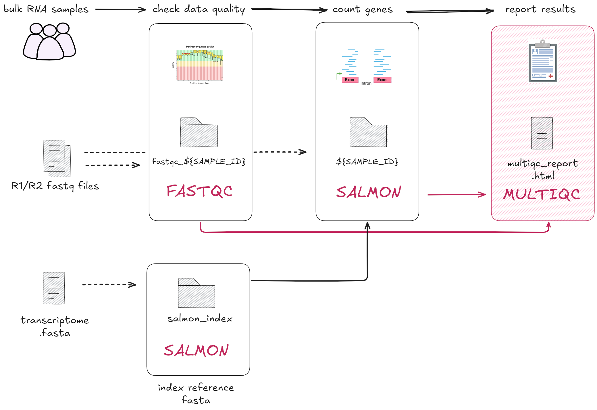

2.4 Combining channels and multiple process outputs
Learning objectives
- Construct a channel that merges the contents of two existing channels.
- Implement a Nextflow process that produces multiple output files and defines them approporiately.
In this step we will transform the 03_multiqc.sh into a process called MULTIQC.
This step focuses on the final step of our RNAseq data processing workflow: generating
a report that summarises the quality control and quantification steps.
To do this, we will run MultiQC, which is a popular tool for summarising the outputs of many different bioinformatics tools. It aggregates results from all our analyses and renders it into a nice report.
From the MultiQC docs
MultiQC doesn’t do any analysis for you - it just finds results from other tools that you have already run and generates nice reports. See here for a list of supported tools.

Open the bash script 03_multiqc.sh.
This script is a lot simpler than previous scripts we've worked with. It searches for the output files generated by the FASTQC and QUANTIFICATION processes saved to the results/ directory. As specified by --outdir results/, it will then output two MultiQC files to the same results/ directory:
- A directory called
multiqc_data/ - A report file called
multiqc_report.html
2.4.1 Building the MULTIQC process
Process directives, script, and input
Here is the process template with the container and publishDir
directives provided. Add this to your main.nf after the QUANTIFICATION process:
process MULTIQC {
container "quay.io/biocontainers/multiqc:1.19--pyhdfd78af_0"
publishDir "results", mode: 'copy'
input:
path "*"
output:
< process outputs >
script:
"""
multiqc .
"""
}
The script and input follow the MultiQC Nextflow
integration recommendations.
The key thing to note here is that MultiQC needs to be run once for all
upstream outputs.
From the information above we know that for the original bash script
the inputs for multiqc are the files and directories within the
results/ directory. Specifically, the inputs are the outputs from the
fastqc and salmon quant commands. To replicate this for our new process,
we will need to bring the outputs of the FASTQC (fastqc_gut_logs/) and
QUANTIFICATION (gut/) processes into a single channel as input to MULTIQC.
Why you should NOT use the publishDir folder as a process input
It might make sense to have the results/ folder (set by publishDir) as
the input to the process here, but it may not exist until the workflow
finishes.
Using the publishDir as a process input can cause downstream processes to run
prematurely, even if the directory is empty or incomplete. In this case,
MultiQC might miss some inputs.
Always use channels to pass data between processes. Channels enable Nextflow to track outputs and ensure that downstream processes only run when all required data is ready, maintaining proper worfklow control.
We will expand more on how to bring these outputs together in the next section.
For now, note how our input definition is a bit different to previous processes.
Instead of defining a variable name to represent our input, we are defining our input as path "*".
This syntax tells Nextflow to simply expect any number of files or directories as input.
With this syntax, we don't get a variable to use within our script, but that's OK, because
MultiQC just needs to be given a directory to search (in our case, the current directory, represented by .)
and it will automatically find all the relevant data.
Defining the process output
The MultiQC output consists of the following:
- An HTML report file called
multiqc_report.html - A directory called
multiqc_data/containing the data used to generate the report.
Add the following output definition to the MULTIQC process:
process MULTIQC {
container "quay.io/biocontainers/multiqc:1.19--pyhdfd78af_0"
publishDir "results", mode: 'copy'
input:
path "*"
output:
path "multiqc_report.html"
path "multiqc_data"
script:
"""
multiqc .
"""
}
You have now defined a process with multiple outputs!
2.4.2 Combining channels with operators
Tip
When running MultiQC, it needs to be run once on all the upstream input files. This is so a single report is generated with all the results.
The input files for our MULTIQC process will be the outputs from the
FASTQC and QUANTIFICATION processes. Both FastQC and Salmon are supported
by MultiQC and the required files are detected automatically by the program.
However, in order to use MultiQC within our Nextflow pipeline, we will first need to
do some pre-processing to get all of our data in one place for MultiQC to search through.
The goal of this step is to bring the outputs from MULTIQC and
QUANTIFICATION processes into a single input channel for the MULTIQC
process. This ensures that MultiQC is run once.
The next few additions will involve chaining together Nextflow operators to
correctly format inputs for the MULTIQC process.
Poll
What Nextflow input type (qualifier) ensures that inputs are grouped and processed together?
Add the following to the workflow block in your main.nf file, under the call to the
QUANTIFICATION process.
// Define the workflow
workflow {
// Run the index step with the transcriptome parameter
INDEX(params.transcriptome_file)
// Define the fastqc input channel
reads_in = Channel.fromPath(params.reads)
.splitCsv(header: true)
.map { row -> [row.sample, file(row.fastq_1), file(row.fastq_2)] }
// Run the fastqc step with the reads_in channel
FASTQC(reads_in)
// Define the quantification channel for the index files
transcriptome_index_in = INDEX.out[0]
// Run the quantification step with the index and reads_in channels
QUANTIFICATION(transcriptome_index_in, reads_in)
// Define the multiqc input channel
FASTQC.out[0]
.mix(QUANTIFICATION.out[0])
.view()
}
This channel does the following:
- Takes the output of
FASTQC, using element[0]to refer to the first element of the output. - Uses
mix(QUANTIFICATION.out[0])to combineFASTQC.out[0]output with the first element of theQUANTIFICATIONoutput. - Uses
view()allows us to see the values emitted into the channel.
For more information, see the documentation on
mix.
Run the workflow to see what it produces:
The output should look something like:
Launching `main.nf` [stupefied_minsky] DSL2 - revision: 82245ce02b
[de/fef8c4] INDEX | 1 of 1, cached: 1 ✔
[bb/32a3aa] FASTQC (1) | 1 of 1, cached: 1 ✔
[a9/000f36] QUANTIFICATION (1) | 1 of 1, cached: 1 ✔
/home/user1/part2/work/bb/32a3aaa5e5fd68265f0f34df1c87a5/fastqc_gut_logs
/home/user1/part2/work/a9/000f3673536d98c8227b393a641871/gut
The outputs have been emitted one after the other. This means that they are currently two separate elements within the channel, which will cause them to be processed separately. We really need them to be processed together (generated in the same MultiQC report). What we need is for them to both be contained within a single tuple, so we need to add one more step.
Note
Note that the outputs point to the files in the work directories, rather than
the publishDir. This is one of the ways that Nextflow ensures all input files
are ready and ensures proper workflow control.
The collect
operator is perfect for this. It takes all of the elements in a channel
and outputs a single tuple containg everything - just what we need!
Add a collect operator to the chain of operators to ensure that all
samples are processed together in the same process and view the output:
// Define the workflow
workflow {
// Run the index step with the transcriptome parameter
INDEX(params.transcriptome_file)
// Define the fastqc input channel
reads_in = Channel.fromPath(params.reads)
.splitCsv(header: true)
.map { row -> [row.sample, file(row.fastq_1), file(row.fastq_2)] }
// Run the fastqc step with the reads_in channel
FASTQC(reads_in)
// Define the quantification channel for the index files
transcriptome_index_in = INDEX.out[0]
// Run the quantification step with the index and reads_in channels
QUANTIFICATION(transcriptome_index_in, reads_in)
// Define the multiqc input channel
FASTQC.out[0]
.mix(QUANTIFICATION.out[0])
.collect()
.view()
}
Run the workflow:
The channel now outputs a single tuple with the two directories:
Launching `main.nf` [small_austin] DSL2 - revision: 6ab927f137
[de/fef8c4] INDEX | 1 of 1, cached: 1 ✔
[bb/32a3aa] FASTQC (1) | 1 of 1, cached: 1 ✔
[a9/000f36] QUANTIFICATION (1) | 1 of 1, cached: 1 ✔
[/home/user1/part2/work/bb/32a3aaa5e5fd68265f0f34df1c87a5/fastqc_gut_logs, /home/user1/part2/work/a9/000f3673536d98c8227b393a641871/gut]
Now that we have a channel that emits data in the correct format, add the finishing touches to the workflow scope.
Exercise: Assign the input channel
- Assign the chain of operations to a channel called
multiqc_in - Remove the
.view()operator
Solution
// Define the quantification channel for the index files
transcriptome_index_in = INDEX.out[0]
// Run the quantification step with the index and reads_in channels
QUANTIFICATION(transcriptome_index_in, reads_in)
// Define the multiqc input channel
multiqc_in = FASTQC.out[0]
.mix(QUANTIFICATION.out[0])
.collect()
}
Exercise: Call the MULTIQC process
- Add a call to the
MULTIQCprocess in the workflow scope - Pass the
multiqc_inchannel as input.
Solution
// Define the quantification channel for the index files
transcriptome_index_in = INDEX.out[0]
// Run the quantification step with the index and reads_in channels
QUANTIFICATION(transcriptome_index_in, reads_in)
// Define the multiqc input channel
multiqc_in = FASTQC.out[0]
.mix(QUANTIFICATION.out[0])
.collect()
// Run the multiqc step with the multiqc_in channel
MULTIQC(multiqc_in)
}
Run the workflow:
Your output should look something like:
Launching `main.nf` [hopeful_swanson] DSL2 - revision: a4304bbe73
[aa/3b8821] INDEX [100%] 1 of 1, cached: 1 ✔
[c2/baa069] QUANTIFICATION [100%] 1 of 1, cached: 1 ✔
[ad/e49b20] FASTQC [100%] 1 of 1, cached: 1 ✔
[a3/1f885c] MULTIQC [100%] 1 of 1 ✔
2.4.3 Inspecting the MultiQC report
Let's inspect the generated MultiQC report. You will need to download the file to your local machine and open it in a web browser.
Exercise
- In the VSCode Explorer sidebar, locate the report
results/multiqc_report.html - Right click on the file, and select "Download"
- Open the file in a web browser
Poll
Under the "General Statistics" section, how many rows have been included in the table?
Tip
If you have to view many .html files on a remote server, we recommend using the
Live Server
VSCode extension.
The extension allows you to view .html files within a VSCode tab instead
of manually downloading files locally.
You now have a working pipeline for a single paired-end sample!
Summary
In this lesson you have learned:
- How to implement a process following integration recommendations
- How to define an output with multiple outputs
- How to use the
mixandcollectoperators to combine outputs into a single tuple - How to access and view
.htmlfiles from a remote server